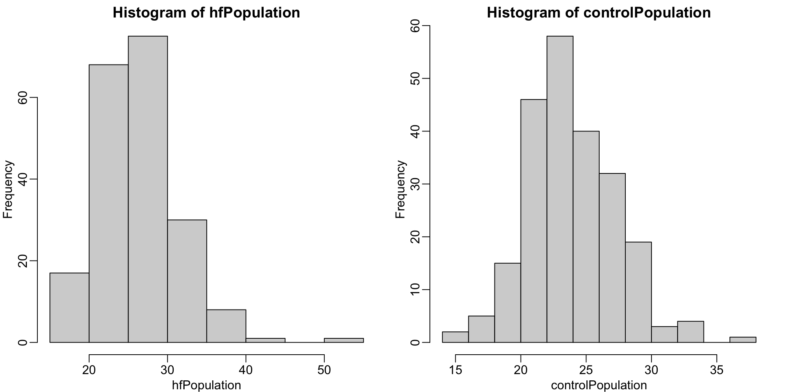
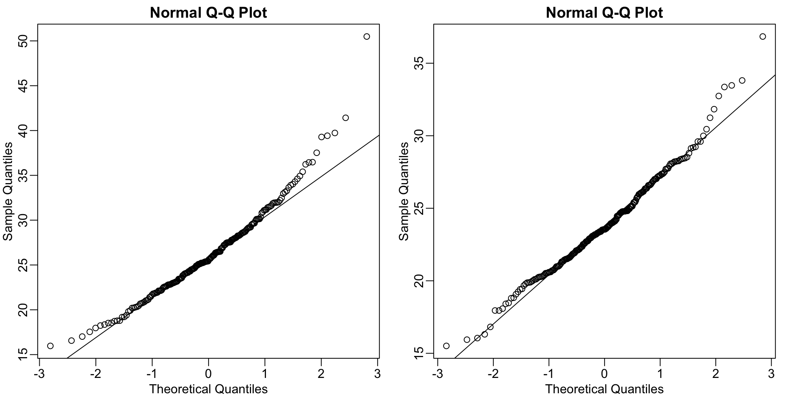

pnorm(-2) + (1 - pnorm(2))[1] 0.04550026Below we will discuss the Central Limit Theorem (CLT) and the t-distribution, both of which help us make important calculations related to probabilities. Both are frequently used in science to test statistical hypotheses. To use these, we have to make different assumptions from those for the CLT and the t-distribution. However, if the assumptions are true, then we are able to calculate the exact probabilities of events through the use of mathematical formula.
The CLT is one of the most frequently used mathematical results in science. It tells us that when the sample size is large, the average \(\bar{Y}\) of a random sample follows a normal distribution centered at the population average \(\mu_Y\) and with standard deviation equal to the population standard deviation \(\sigma_Y\), divided by the square root of the sample size \(N\). We refer to the standard deviation of the distribution of a random variable as the random variable’s standard error.
Please note that if we subtract a constant from a random variable, the mean of the new random variable shifts by that constant. Mathematically, if \(X\) is a random variable with mean \(\mu\) and \(a\) is a constant, the mean of \(X - a\) is \(\mu-a\). A similarly intuitive result holds for multiplication and the standard deviation (SD). If \(X\) is a random variable with mean \(\mu\) and SD \(\sigma\), and \(a\) is a constant, then the mean and SD of \(aX\) are \(a \mu\) and \(\mid a \mid \sigma\) respectively. To see how intuitive this is, imagine that we subtract 10 grams from each of the mice weights. The average weight should also drop by that much. Similarly, if we change the units from grams to milligrams by multiplying by 1000, then the spread of the numbers becomes larger.
This implies that if we take many samples of size \(N\), then the quantity:
\[ \frac{\bar{Y} - \mu}{\sigma_Y/\sqrt{N}} \]
is approximated with a normal distribution centered at 0 and with standard deviation 1.
Now we are interested in the difference between two sample averages. Here again a mathematical result helps. If we have two random variables \(X\) and \(Y\) with means \(\mu_X\) and \(\mu_Y\) and variance \(\sigma_X\) and \(\sigma_Y\) respectively, then we have the following result: the mean of the sum \(Y + X\) is the sum of the means \(\mu_Y + \mu_X\). Using one of the facts we mentioned earlier, this implies that the mean of \(Y - X = Y + aX\) with \(a = -1\) , which implies that the mean of \(Y - X\) is \(\mu_Y - \mu_X\). This is intuitive. However, the next result is perhaps not as intuitive. If \(X\) and \(Y\) are independent of each other, as they are in our mouse example, then the variance (SD squared) of \(Y + X\) is the sum of the variances \(\sigma_Y^2 + \sigma_X^2\). This implies that variance of the difference \(Y - X\) is the variance of \(Y + aX\) with \(a = -1\) which is \(\sigma^2_Y + a^2 \sigma_X^2 = \sigma^2_Y + \sigma_X^2\). So the variance of the difference is also the sum of the variances. If this seems like a counterintuitive result, remember that if \(X\) and \(Y\) are independent of each other, the sign does not really matter. It can be considered random: if \(X\) is normal with certain variance, for example, so is \(-X\). Finally, another useful result is that the sum of normal variables is again normal.
All this math is very helpful for the purposes of our study because we have two sample averages and are interested in the difference. Because both are normal, the difference is normal as well, and the variance (the standard deviation squared) is the sum of the two variances. Under the null hypothesis that there is no difference between the population averages, the difference between the sample averages \(\bar{Y}-\bar{X}\), with \(\bar{X}\) and \(\bar{Y}\) the sample average for the two diets respectively, is approximated by a normal distribution centered at 0 (there is no difference) and with standard deviation \(\sqrt{\sigma_X^2 +\sigma_Y^2}/\sqrt{N}\).
This suggests that this ratio:
\[ \frac{\bar{Y}-\bar{X}}{\sqrt{\frac{\sigma_X^2}{M} + \frac{\sigma_Y^2}{N}}} \]
is approximated by a normal distribution centered at 0 and standard deviation 1. Using this approximation makes computing p-values simple because we know the proportion of the distribution under any value. For example, only 5% of these values are larger than 2 (in absolute value):
pnorm(-2) + (1 - pnorm(2))[1] 0.04550026We don’t need to buy more mice, 12 and 12 suffice.
However, we can’t claim victory just yet because we don’t know the population standard deviations: \(\sigma_X\) and \(\sigma_Y\). These are unknown population parameters, but we can get around this by using the sample standard deviations, call them \(s_X\) and \(s_Y\). These are defined as:
\[ s_X^2 = \frac{1}{M-1} \sum_{i=1}^M (X_i - \bar{X})^2 \mbox{ and } s_Y^2 = \frac{1}{N-1} \sum_{i=1}^N (Y_i - \bar{Y})^2 \]
Note that we are dividing by \(M-1\) and \(N-1\), instead of by \(M\) and \(N\). There is a theoretical reason for doing this which we do not explain here. But to get an intuition, think of the case when you just have 2 numbers. The average distance to the mean is basically 1/2 the difference between the two numbers. So you really just have information from one number. This is somewhat of a minor point. The main point is that \(s_X\) and \(s_Y\) serve as estimates of \(\sigma_X\) and \(\sigma_Y\)
So we can redefine our ratio as
\[ \sqrt{N} \frac{\bar{Y}-\bar{X}}{\sqrt{s_X^2 +s_Y^2}} \]
if \(M=N\) or in general,
\[ \frac{\bar{Y}-\bar{X}}{\sqrt{\frac{s_X^2}{M} + \frac{s_Y^2}{N}}} \]
The CLT tells us that when \(M\) and \(N\) are large, this random variable is normally distributed with mean 0 and SD 1. Thus we can compute p-values using the function pnorm.
The CLT relies on large samples, what we refer to as asymptotic results. When the CLT does not apply, there is another option that does not rely on asymptotic results. When the original population from which a random variable, say \(Y\), is sampled is normally distributed with mean 0, then we can calculate the distribution of:
\[ \sqrt{N} \frac{\bar{Y}}{s_Y} \]
This is the ratio of two random variables so it is not necessarily normal. The fact that the denominator can be small by chance increases the probability of observing large values. William Sealy Gosset, an employee of the Guinness brewing company, deciphered the distribution of this random variable and published a paper under the pseudonym “Student”. The distribution is therefore called Student’s t-distribution. Later we will learn more about how this result is used.
Here we will use the mice phenotype data as an example. We start by creating two vectors, one for the control population and one for the high-fat diet population:
library(dplyr)
dat <- read.csv("mice_pheno.csv") #We downloaded this file in a previous section
controlPopulation <- filter(dat,Sex == "F" & Diet == "chow") %>%
select(Bodyweight) %>% unlist
hfPopulation <- filter(dat,Sex == "F" & Diet == "hf") %>%
select(Bodyweight) %>% unlistIt is important to keep in mind that what we are assuming to be normal here is the distribution of \(y_1,y_2,\dots,y_n\), not the random variable \(\bar{Y}\). Although we can’t do this in practice, in this illustrative example, we get to see this distribution for both controls and high fat diet mice:
library(rafalib)
mypar(1,2)
hist(hfPopulation)
hist(controlPopulation)
We can use qq-plots to confirm that the distributions are relatively close to being normally distributed. We will explore these plots in more depth in a later section, but the important thing to know is that it compares data (on the y-axis) against a theoretical distribution (on the x-axis). If the points fall on the identity line, then the data is close to the theoretical distribution.
mypar(1,2)
qqnorm(hfPopulation)
qqline(hfPopulation)
qqnorm(controlPopulation)
qqline(controlPopulation)
The larger the sample, the more forgiving the result is to the weakness of this approximation. In the next section, we will see that for this particular dataset the t-distribution works well even for sample sizes as small as 3.